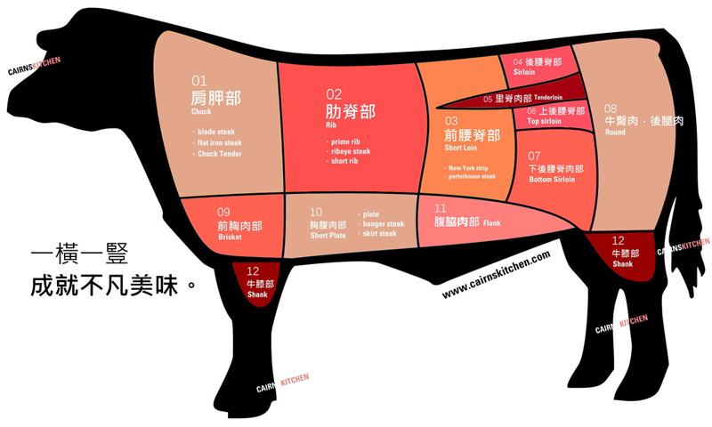

牛肉 部位介紹

01 肩胛部|Chuck
此部位由於運動量多，筋肉結實，因此需要先將筋做處理，如此口感才會軟嫩。
Blade steak 板腱牛排：清
修後適合做牛排、燒烤等料理，未清修則適合燉滷
Flat iron steak 翼板牛排：
此部位較為柔軟的部分
Chuck tender 肩胛里肌：
肉質偏硬，適合做切片或燉滷
02 肋脊部|Rib
此部位主要在背的前段部位，運動量少因此肉質柔嫩，此部位油花分布均勻是十分合適拿來做牛排的位置。
Prime rib 肋眼：
肉質嫩帶彈牙，適合碳烤
Ribeye steak 肋眼牛排：
由肋脊部中間取出來的肉，肉中有油有筋，喜歡多一點油的朋友們可以試試
Short rib 牛小排：
位於牛肋與肩之間，油脂分布均勻，肉質柔軟甘甜，不論燒烤、煎或放進爐子烤都合適
03 前腰脊部|Short loin
此部位因為運動量較肋脊部多，所以肉質吃起來有嚼勁。
New York strip 紐約客牛排：
肉中帶點細筋，風味十足
Porterhouse steak 紅屋牛排：
腰肋骨兩邊的肉，中間有塊丁骨，上面是紐約客，下面是菲力，因為中間夾著丁字型骨頭，所以又稱「丁骨牛排」，因為可以一次吃到兩種口感，是饕客最愛
04 後腰脊部|Sirloin
沙朗牛排
，靠近牛屁股的部位，因為價格較平易，所以為經濟的牛排選擇。
05 里肌肉部|Tenderloin
整隻牛最軟嫩的位置。
06 上腰脊部|Top sirloin
無骨沙朗
，跟紐約客接近，是整塊後腰脊部比較柔嫩的部位，也適合做牛排。
07 下腰脊部|Bottom sirloin
是最大塊的沙朗肉，肉質偏硬。
08 牛臀肉、後腿肉|Round
此部位的特色是運動多，肉大塊，筋肉較粗，油脂少，因此有些餐廳會拿來做特大塊牛排，中間部位因為肉質較硬、可以用來燉肉，或是切片燒烤。
09 前胸肉部|Brisket
肉質較堅韌，不適合做牛排，通常拿來做牛腩。
10 胸腹肉部|Plate
吃在口中有股香味，肉中富含油脂，適合切片燒烤或著當火鍋肉片。
Plate胸腹(五花)：
適合拿來切片做燒烤
Hanger steak 橫膈膜中心肉：
肉質軟嫩
Skirt steak 側腹橫肌牛排：
橫膈膜外圍，常用來做牛柳
11 腹脇肉部|Flank
此部位在後腿跟部前面一點，可以做成各樣熟度，料理方式多元。
12 牛膝部|Shank
牛的腿部，口感風味似牛見，適合燉煮且富含膠質。板腱